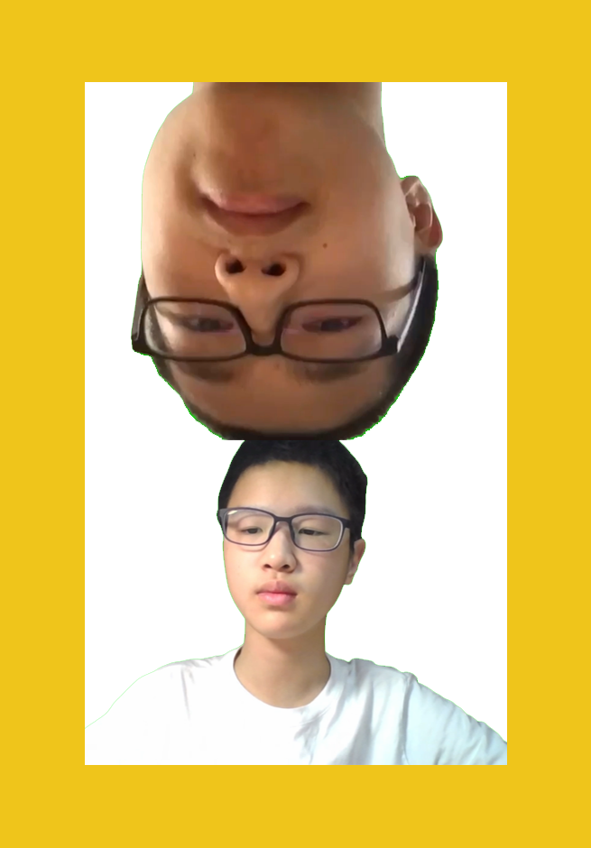
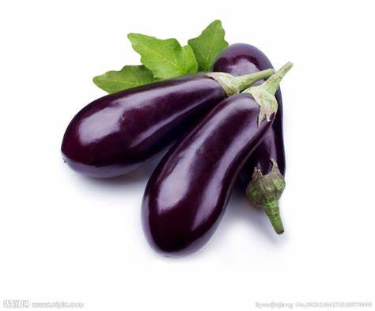
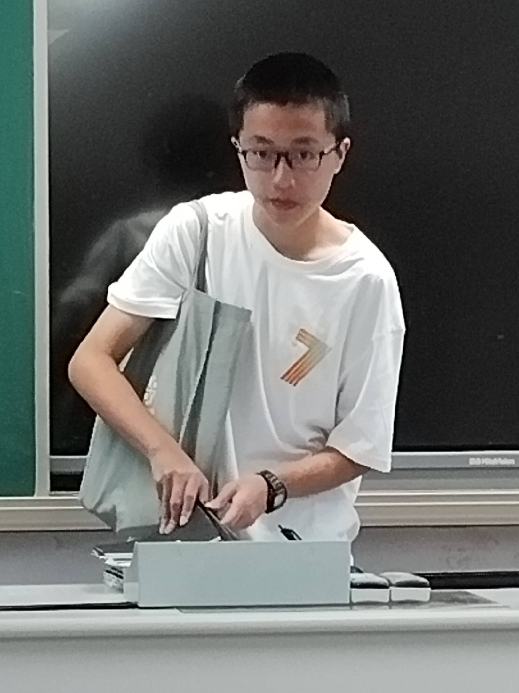
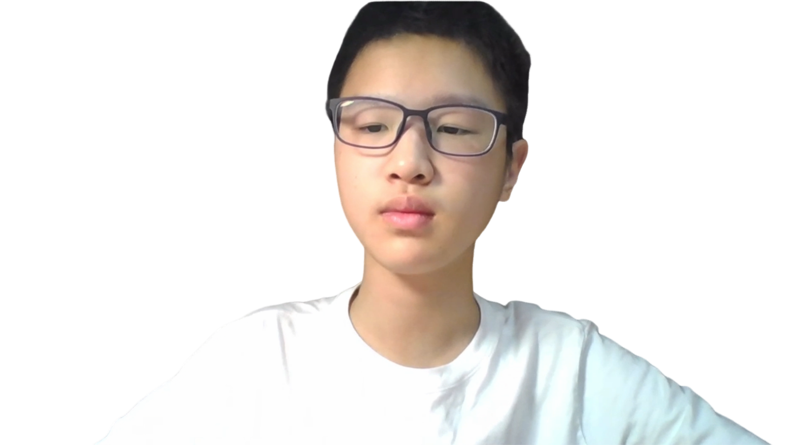

National Quriosity Home Naitiygnazh Qz  Support/Help About Us
Quriosity
In search of incredible
Naitiygnazh
A strange person who seems like a robot.
He suffers from Testicular abnormalities.
It is said that he lost one of his testicle when he was 13 years old.
Picture on the right is one of the photos of his daily life.
Deeper research is ongoing.
Want more information? Visit the link 'Naitiygnazh' above.
Qz
Not so interesting as Naitiygnazh.He is born in Naix.
Some of his relatives now live in Snerolf.
Researchers find that he is extremely wealthy.
He has a nick name-'Ancient Greek God in charge of the hat'.
Recently,researchers discover that he cannot live without the mask or hat.
For more information,click the picture of eggplant above.
Contact Us
Phone number:17321156420 Address:Nigeria Amazoue@2019-2024